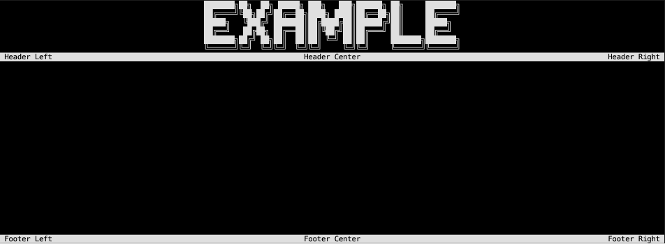
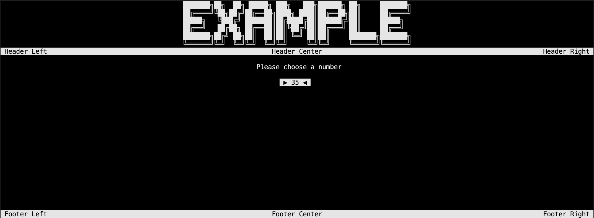
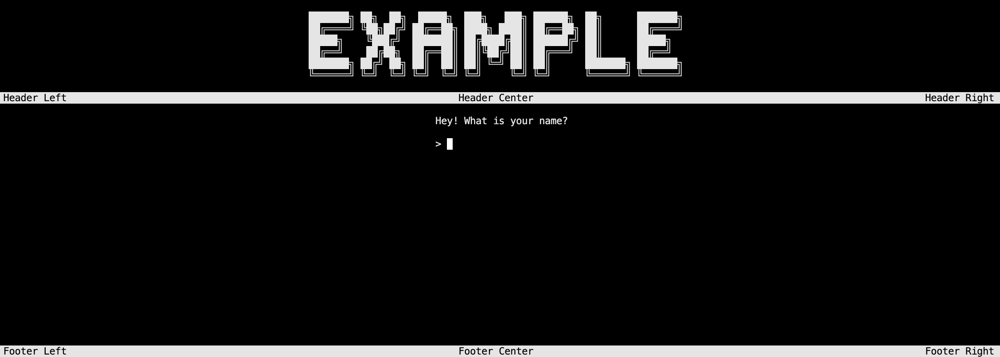
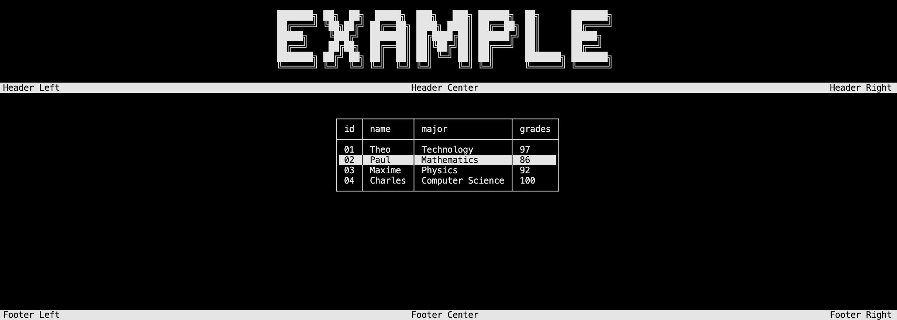
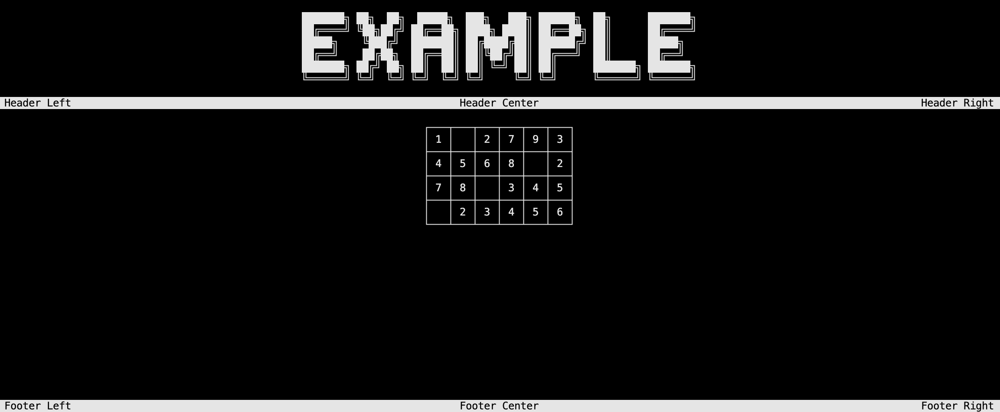
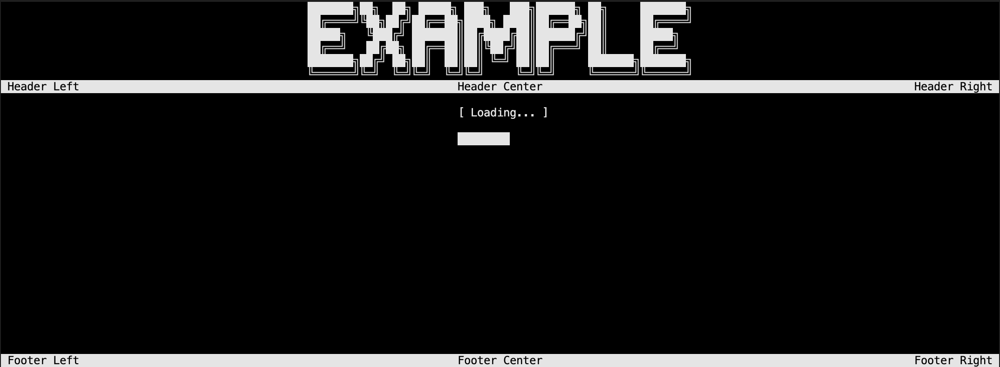
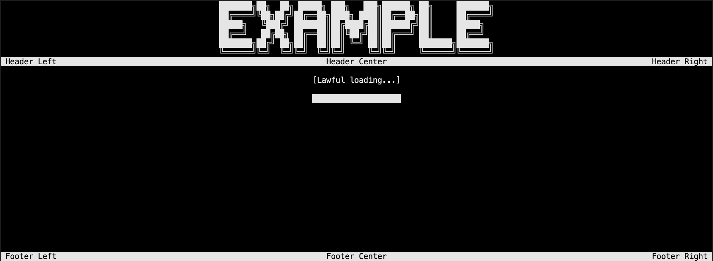
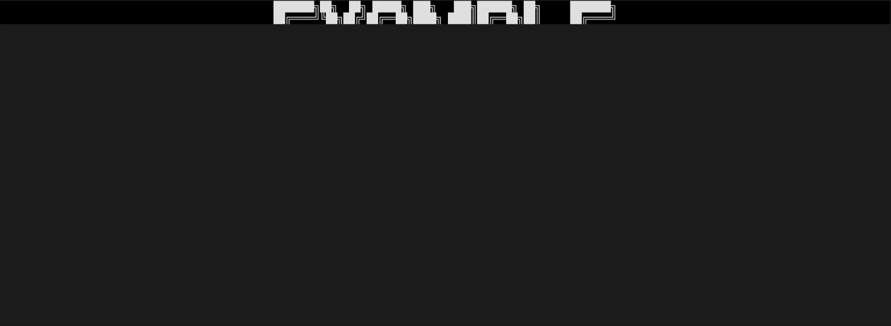

Specific methods
Scrolling menu
The ScrollingMenuSelector is a special block that allows you to display a menu with a scrolling effect. You may specify the question and the different choices.
Core.WriteFullScreen("Example", true);
Core.ScrollingMenuSelector("New question asked ?", 0, Placement.Center, null, "Option 1", "Option 2", "Option 3");
Console.ReadKey();
 Demo with scrolling menu
Note
To get the selected option and the key input, refer to the example project.
Number selector
The ScrollingNumberSelector is a special block that allows you to display a scrolling element with a number. You may define the minimum and maximum values, the step and the initial value.
Core.WriteFullScreen("Example", true);
Core.ScrollingNumberSelector("Please choose a number", 10, 50, 25, 5);
Console.ReadKey();
 Demo with number selector
Note
To get the selected option and the key input, refer to the example project.
Prompt
The WritePrompt let you ask a prompt to the user and get the input. You may define the question and the default value.
Core.WriteFullScreen("Example", true);
Core.WritePrompt("Is your name John Doe ?", "John Doe");
Console.ReadKey();
 Demo with prompt
Table selector
First, you need to create a Table object giving the lines and optionally the headers just as in the example below.
List<string> headers = new () {"id", "name", "major", "grades"};
List<string> student1 = new () {"01", "Theo", "Technology", "97"};
List<string> student2 = new () {"02", "Paul", "Mathematics", "86"};
List<string> student3 = new () {"03", "Maxime", "Physics", "92"};
List<string> student4 = new () {"04", "Charles", "Computer Science", "100"};
Table<string> students = new (headers, new () {student1, student2, student3, student4});
The ScrollingTableSelector is a special block that allows you to display the table with a selector.
students.ScrollingTableSelector(true, false, "Add student");
 Demo with table selector
Note
Once you created the table, you can add, remove or update the data using the methods provided by the Table class (AddLine, RemoveLine, UpdateLine).
Here is an example of a table of how to use them:
students.AddLine(new () {"05", "John", "Biology", "95"});
students.RemoveLine(4);
students.UpdateLine(3, new () {"04", "Charles", "Computer Science", "55"});
students.Count
You may also use the SetRoundedCorners method to set the rounded corners to true or false for the tables.
students.SetRoundedCorners(true);
Matrix display
First, you need to create a Matrix object giving the data just as in the example below.
List<int?> firstRow = new() { 1, null, 2, 7, 9, 3 };
List<int?> secondRow = new() { 4, 5, 6, 8, null, 2 };
List<int?> thirdRow = new() { 7, 8, null, 3, 4, 5 };
List<int?> fourthRow = new() { null, 2, 3, 4, 5, 6 };
List<List<int?>> data = new() { firstRow, secondRow, thirdRow, fourthRow };
Matrix<int?> matrix = new(data);
The WriteMatrix is a special block that allows you to display the matrix. This is only visual, you can't select any element.
matrix.WriteMatrix(Placement.Center);
Console.ReadKey();

Note
Once you created the matrix, you can add, remove or update the lines using the methods provided by the Matrix class (AddLine, RemoveLine, UpdateLine) but also the elements using the RemoveElement and UpdateElement methods.
Here is an example of a matrix of how to use them:
matrix.AddLine(new () {2, 5, 7, 9, 3, 6});
matrix.RemoveLine(3);
matrix.UpdateLine(2, new () {3, 6, 8, 9, null, 2});
matrix.RemoveElement(new Position(2, 2));
matrix.UpdateElement(new Position(3,1), 7);
matrix.GetElement(new Position(2,1));
matrix.Count
You may also use the SetRoundedCorners method to set the rounded corners to true or false for the matrix.
matrix.SetRoundedCorners(true);
Loading bar
The LoadingBar is a special block that allows you to display a loading bar. You may define the text to display while loading.
Core.WriteFullScreen("Example", true);
Core.LoadingBar();
Console.ReadKey();
 Demo with loading bar
Lawful loading bar
The ProcessLoadingBar is a special block that allows you to display a loading bar with a text and a true loading bar. You may define the text to display while loading.
Core.WriteFullScreen("Example", true);
var percentage = 0f;
var t_Loading = new Thread(() => Core.ProcessLoadingBar("[Lawful loading...]",ref percentage)); // Create a Thread to run the loading bar on the console
t_Loading.Start();
while (percentage <= 1f)
{
Thread.Sleep(100);
percentage += 0.1f; // Simulate a loading process
}
t_Loading.Join(); // Wait for the Thread to finish
Console.ReadKey();
 Demo with lawful loading bar
Exit
Last but no least, to exit the application, you can use the ExitProgram method. It will display a message and exit the application.
Core.WriteFullScreen("Example", true);
Core.ExitProgram();
Console.ReadKey();
 Demo with exit message